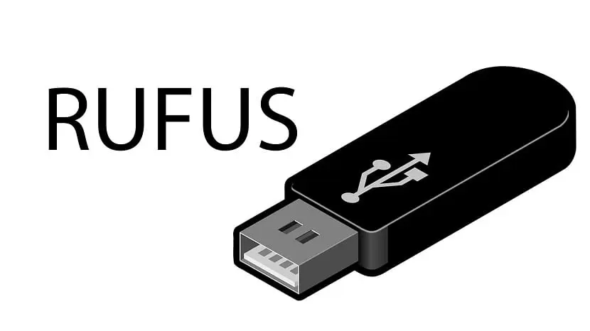
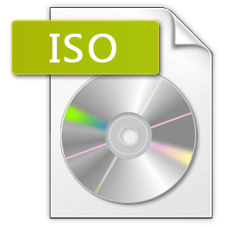
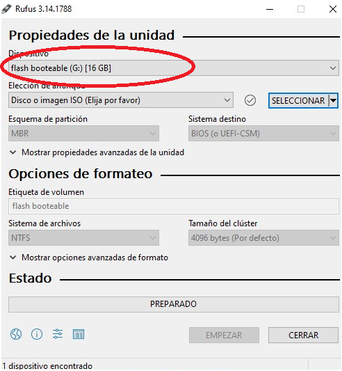
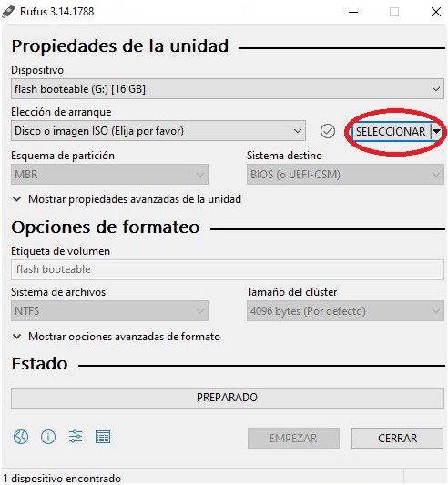
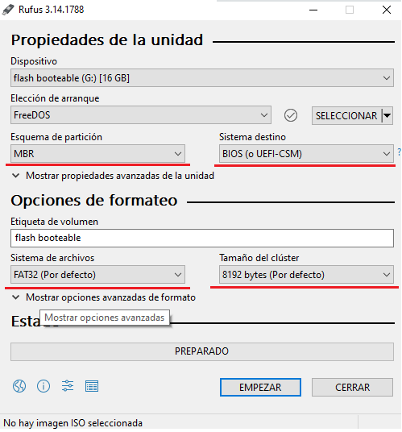

¿Qué es Rufus?
Rufus es un programa mismo que sirve para hacer las usb booteable y para foormatear las mismas, este programa no es pesado y es compatible con varias versiones de windows, puedes descargarlo en su pagina oficial que esta en la siguiente pagina. ---->
RUFUS

¿Qué es una imagen ISO?
Una imagen ISO es basicamente una copia de todos los programas archivos y drivers necesarios para que el sistema operativo que estemos por instalar funcione, las imagenes ISO se las puede conseguir en los sitios oficiales del sistema operativo que vayamos a instalar.
ISO Windows 10
ISO GNU/Linux
ISO de Ubuntu

Pasos Para hacer una USB Booteable
Primer paso
Al abrir el programa Rufus tenemos qque seleccionar el dispditivo usb o el disco que vayamos a hacer booteable, en la parte superior hay un menu en el cual seleccionamos el sipositivo que vayamos a utilizar.

Segundo paso
Luego damos click es la pestaña seleccionar mimo que va a abrir una ventana en la cula vamos a seleccionar la imagen ISO del sistema operativo a instalar.

Tercer paso
Vamos a poner los siguientes parametros de la siguiente manera esquema de partición "MBR", en sistema de destino colocamos "BIOS" sistema de archivos "FACT32" y podemos empezar, este proceso podria tardar varios minutos.

Listo ya tienes una usb booteable